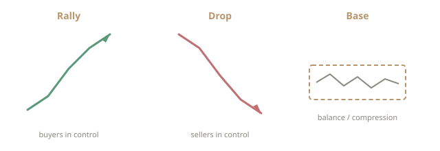
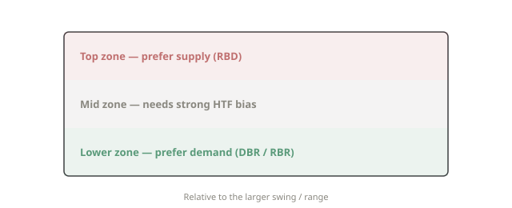

Learn
Education
A detailed pathway through market structure, supply and demand zones, institutional order flow, confirmation, and risk — with diagrams so the ideas are visual, not only verbal.
Educational disclaimer
Everything below is for learning. It is not investment advice, not a recommendation to buy or sell any instrument, and not a promise of results. Markets involve the risk of loss. A complete setup on a chart does not guarantee a favourable outcome. See Risk Disclosure.
How to use this page
Read in order the first time. Structure builds on structure. After that, return to individual sections when reviewing charts. The goal is literacy: recognising what the market has already done, where imbalance may still exist, and where risk is defined — not predicting the next tick.
Learning progression: Trends → Moves → Zones → Location → Confirmation → Order flow → Risk → Practice.
1. The two major trends
At the highest level there are only two directional regimes:
- Uptrend (Rally regime) — successive advances and higher reaction points. Advancing legs are called rallies. Buyers are the active force on the expansion.
- Downtrend (Drop regime) — successive declines and lower reaction points. Pressure from sellers shows as drops.
Trends are not continuous straight lines. They are sequences of expansion and pause. The pause is where this framework spends most of its attention, because that is where orders build and where zones are drawn.
2. The three basic market moves
Every chart, on every time frame, is built from three elemental moves:
- Rally — a sustained move higher. Selling is absorbed or overwhelmed.
- Drop — a sustained move lower. Buying is absorbed or overwhelmed.
- Base — relative balance (sideways or compressed range). Orders accumulate. Bases are often the warehouse before the next expansion.

On a candle chart a base may appear as overlapping candles or a tight cluster after a strong leg. On a higher time frame the same base can look like a single decision candle.
3. The four structural patterns
Combining the three moves produces four patterns that define almost every classical supply or demand zone:

RBR — Rally, Base, Rally
Price advances, pauses, then advances again. The base is a demand zone (continuation). Residual buying interest may remain. On a return, the question is whether leftover demand still has force.
DBR — Drop, Base, Rally
Price declines, bases, then turns higher. The base is a demand zone (reversal). Sellers exhausted or were absorbed; buyers took control.
DBD — Drop, Base, Drop
Price declines, pauses, then declines again. The base is a supply zone (continuation). A return is studied as a potential area where selling may reappear.
RBD — Rally, Base, Drop
Price advances, bases, then turns lower. The base is a supply zone (reversal). Often forms near swing highs or after extended rallies into resistance.
Train the eye to draw the base between the two legs. Zone quality depends on clarity of departure, location in the larger structure, and how many times the zone has already been retested.
4. What a zone actually is
A zone is a price region, not a single horizontal line. It marks where imbalance previously occurred with enough force that leftover orders are a reasonable hypothesis.
- Demand zone — associated with buying interest.
- Supply zone — associated with selling interest.
How far to draw the zone is a practical skill: too narrow and noise stops you out; too wide and risk becomes undefined. Many practitioners anchor on the base that produced the strong departure, including the extreme wick if it was part of the decision area.
Fresh versus depleted. A zone never revisited (first time back) often carries more informational value than one tested many times. Each test can consume resting orders.
5. Location: top, mid, and lower zones
Not every demand zone is equal. Location relative to the larger swing matters:

- Lower zone — demand near the lower third or after a sustained drop. Often higher quality for long hypotheses.
- Mid zone — usable for continuation, but needs clear broader bias.
- Top zone — supply near the upper third or after a sustained rally. Educational short hypotheses often prefer clear RBD here.
Always ask: relative to the higher time frame, where is this zone? An M15 demand zone inside daily supply is a different risk from the same zone aligning with HTF demand.
6. Higher time frame, lower time frame
Structure is fractal. A common educational process:
- Identify bias and major zones on the higher time frame (daily, 4H).
- Wait for price to approach that zone.
- On the lower time frame, look for a complete setup that agrees with HTF location.
Trading only lower-time-frame noise without HTF location is a common source of inconsistency.
7. The complete setup rule
Only act when the setup is complete:

- Clear structural pattern (RBR, DBR, DBD, or RBD)
- Acceptable location (HTF context, zone quality)
- Confirming behaviour on approach or at the zone
- Defined invalidation and asymmetric risk versus a logical target
If any element is missing, treat the idea as incomplete. Incomplete ideas are where misjudgment concentrates.
8. Confirmation concepts in detail
Role reversal (SR flip / RS flip)
Former resistance, once broken and retested from the other side, can act as support — and the reverse. Strongest when the break was decisive and the retest is the first return.
Fakeouts and liquidity sweeps
Price briefly trades beyond an obvious high or low, triggers breakout orders and stops, then reverses. Educational frameworks treat this as liquidity taken rather than a true breakout.
Failure to return (FTR)
After leaving a level with force, price does not reclaim it. Supports the new direction.
First time back (FTB)
The first revisit to a fresh zone is often the highest-quality test in this model. Probability is assumed to degrade with each subsequent touch.
Engulfing, Quasimodo (QM), decision points
Advanced pattern vocabulary for precision inside a zone. Secondary to location and risk. QML, MPL, and DP are labels some practitioners use for the exact reaction area within a broader base.
9. Institutional order flow — deeper view
Large participants leave structural footprints:

- Imbalance — aggressive orders consume resting liquidity; price expands. Strong departures from a base are the chart expression.
- Absorption — large passive interest holds price despite opposing aggression (long wicks, stalled progress).
- Liquidity pools — stops cluster above highs and below lows; price is often drawn there before reversing.
- Accumulation / distribution — bases where size is built or reduced before expansion.
Zones map where imbalance occurred. Order-flow thinking asks why a return might still matter. Institutions are not omniscient; “smart money” language is a teaching model, not a guarantee.
10. Risk, reward, and practice
No technique removes risk. Edge, if it exists, is probabilistic. Practical discipline includes hard invalidation, position size from distance to invalidation, limits on open risk, and deliberate chart review so recognition becomes automatic under less emotion.
If you want zero losses, the only reliable method is not to trade. Education that sells certainty is not education.
11. Investing, trading, and technology
Investing emphasises horizons, allocation, diversification, and compounding. Trading emphasises structure, defined risk per idea, and process under uncertainty. Systematic rules and AI-assisted tools can support scanning and risk limits; they do not know the future. Any discussion of automation here is educational framing, not a performance claim.
12. Worked example (how to read a chart step by step)
- Open the higher time frame. Mark the last clear rally or drop and the base that launched it.
- Classify the pattern (RBR / DBR / DBD / RBD) and note whether the zone sits in the top, mid, or lower third of the larger range.
- Check how many times price has already returned to that base. Prefer fresh zones.
- Wait for price to approach. On a lower time frame, look for confirmation (rejection, failed break, role flip, or a miniature complete setup agreeing with HTF).
- Define invalidation beyond the structure of the zone. Size the idea from that distance. If reward to the next opposing structure is poor, pass.
This sequence is practice methodology, not a signal service.
13. Common mistakes
- Drawing zones on every pause, including noise with no clear departure
- Ignoring higher-time-frame location
- Defending depleted zones out of attachment to a line drawn days earlier
- Entering before confirmation because “it looks close enough”
- Moving invalidation after entry to avoid being wrong
- Treating order-flow language as proof that institutions will rescue the position
14. Glossary (core terms)
- H / L / HH / LL — High, Low, Higher High, Lower Low
- RBR / RBD / DBR / DBD — the four structural patterns
- QML — Quasimodo level
- MPL — Maximum pain level (precision area inside a zone)
- DP — Decision point
- FTR / FTB — Failure to return / First time back
- SR flip / RS flip — Support–resistance role reversal
- HTF / LTF / STF — Higher / lower / small time frame
- CP — Compression (tight base before expansion)
Continue with Insights for essay-style discussion, Mentorship for guided learning context, and Our Approach for how research informs capital decisions at the firm level.